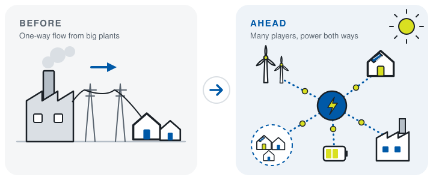
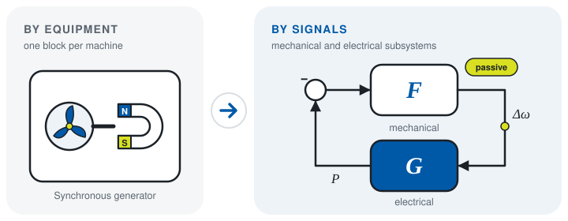
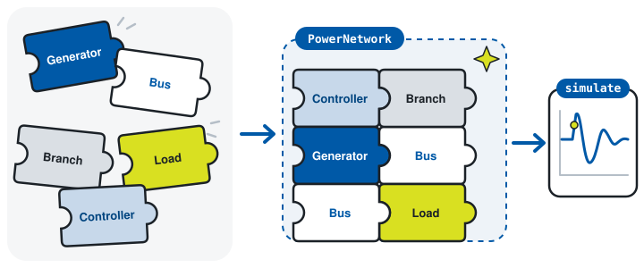
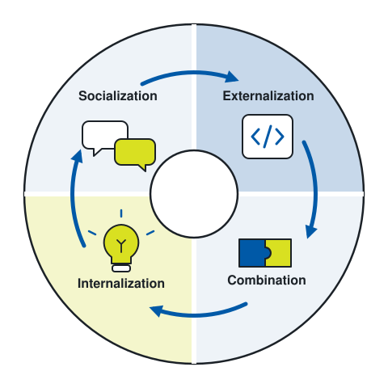
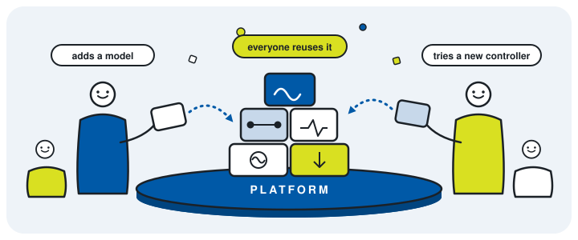

GUILDA
Grid & Utility Infrastructure Linkage Dynamics Analyzer
A MATLAB power-system simulator for students and researchers in systems and control, built from blocks you combine, analyse and share.
Supported Analyses
-
Tutorial
RMS phasor models
Three-phase balanced networks described as phasors.
-
Tutorial
Time-domain simulation
Responses to faults, load and input changes, and initial-value perturbations.
-
Tutorial
Linearization
Approximate linear models ẋ = Ax + Bu, y = Cx + Du and energy-function Hessians.
-
Tutorial
Optimal power flow
General formulations of OPF problems on the same network.
-
Graph & animation
Network graphs whose node heights and colours follow the response.
Update Log
- Added
- Changed
- Deprecated
- Removed
- Fixed
License
GUILDA is released under the MIT License. For more details, please refer to the
LICENSE file located in the root directory of the repository.
About GUILDA
Power-system knowledge, in the language of systems and control.
Why GUILDA exists and the ideas behind its design. GUILDA is developed by the Ishizaki Laboratory in collaboration with Takahiro Kawaguchi (Gunma University).

01 Why
Future grids are a control problem
Decarbonisation changes who takes part in the grid. Power once flowed one way, from large plants to consumers. Now wind and solar plants, homes with rooftop PV, batteries and microgrids join in, and many of them can be controlled. Keeping the supply stable means steering that flow, and that is where control engineering can help.
Yet the two fields frame problems differently. Power-system and power-electronics tools value detailed models, fast computation, faithful reproduction of real events and one module per piece of equipment. Control engineering looks for models that capture the essential dynamics, and for principles that follow from them. Learning the power domain well enough to bridge that gap takes a lot of time.

02 What
A simulator built for systems and control
GUILDA is a power-system simulator for students and researchers in systems and control. It brings power-system knowledge into control engineering, so that you can study grids with the tools and questions of our own field.
It is closely linked with the textbook 「電力系統のシステム制御工学」 (Systems Control Engineering of Power Systems), which explains power systems from the viewpoint of control and uses GUILDA for its numerical examples.
03 Design goals
Three things GUILDA is designed to do
-
1
Usable by power-system beginners
Run real analyses without first deriving admittance matrices, operating points or the differential-algebraic equations of the whole grid.
-
2
Reveal structure and properties
Tutorials, graphs, animations and linearized models help you see why the system behaves as it does, not only what it does.
-
3
Split models by signals
Divide the system by physical signals such as frequency and power, not only by equipment, so that control-theoretic analyses fit naturally.

04 How
Building blocks that snap together
GUILDA is object-oriented. Buses, branches, generators, loads and controllers are classes, and they fit together like puzzle pieces into a
PowerNetwork. The network takes care of the electrical constraints and the interactions between devices, so you can go straight to simulating,
linearizing and plotting.

% Snap the pieces together
net = PowerNetwork("TestSystem");
net.add_bus();
net.add_bus();
net.add_branch("pi", [1, 2]);
net.a_Bus{1}.add_component("gen-park");
net.a_Bus{2}.add_component("load-power");
% Or start from a packaged network and analyse it
net = network.IEEE14bus;
fault = odeEventSet("fault", net, "FaultBus", "B008", "TimeSpan", [3, 3.1]);
sol = net.simulate([0, 50], fault); % time response
sys = net.get_sys(); % linearized model05 Vision
A platform where knowledge keeps growing
Research know-how often lives in one person's head and leaves with them. GUILDA aims to be a knowledge platform built on the SECI knowledge spiral of Ikujiro Nonaka, where tacit and explicit knowledge keep turning into each other:
- Socialization Share experience and progress in meetings and discussions.
- Externalization Write what you learned as models and analyses with clear interfaces.
- Combination Connect those objects on the platform into new analyses.
- Internalization Use the platform in your own research and gain new insight.
Each turn of the spiral leaves something reusable behind, so knowledge is not tied to individuals and keeps growing. The name echoes a guild: a circle of researchers and engineers who learn from one another and build together.


06 Compared
Where GUILDA stands
| Analysis | Conventional analysis package | GUILDA |
|---|---|---|
| Power flow | ✓ | ✓ |
| Small-signal stability via linearization | ✓ | ✓ |
| Time-domain (transient) response | ✓ | ✓ |
| Interfaces for control engineering | Limited | Core focus |
Based on Table 1 of the article below, which compares GUILDA with CPAT, a power-system analysis package widely used in Japan. CPAT also offers fault and harmonic calculations, which GUILDA does not target.
Books and articles
- T. Ishizaki, T. Kawaguchi and K. Kawabe, 「電力系統のシステム制御工学 – システム数理と MATLAB シミュレーション –」, Corona Publishing (in Japanese). The textbook explains power systems in the language of systems and control and uses GUILDA for its numerical examples.
- T. Nishino, T. Kawaguchi and T. Ishizaki, 「GUILDA：エネルギーナレッジマネジメントのはじめの一歩」, 計測と制御, Vol. 62, No. 9, pp. 559–563, 2023 (in Japanese).
- Introductory article, 計測と制御, Vol. 62, No. 10 (in Japanese, PDF).
How to cite
If you use GUILDA in published work, please cite the article that introduces it:
T. Nishino, T. Kawaguchi and T. Ishizaki, "GUILDA: エネルギーナレッジマネジメントのはじめの一歩,"
計測と制御, Vol. 62, No. 9, pp. 559–563, 2023.Getting Started
Requirements
GUILDA runs on MATLAB and requires the following products:
- MATLAB
- Control System Toolbox
- Symbolic Math Toolbox
- Optimization Toolbox
Install
Clone or download the repository from GitHub, or open it directly in MATLAB Online.

Start GUILDA
Open the GUILDA repository folder in MATLAB and run the constructor at the beginning of a session.
>> GUILDA;The constructor prepares the environment by performing the configured startup tasks:
- Print the GUILDA logo.
- Pull the latest revision when Git update is enabled.
- Add the required GUILDA folders to the MATLAB path. This step is always performed.
- Check the required MATLAB products.
- Update the generated documentation database and class signature map when enabled.
- Display the update log and open the tutorial when enabled.
Your First Simulation
Load a packaged network, apply a short fault at one bus and simulate the response. The plot shows the frequency deviation of several generators.
net = network.IEEE14bus;
fault = odeEventSet("fault", net, "FaultBus", "B008", "TimeSpan", [3, 3.1]);
sol = net.simulate([0, 50], fault);
xsol = sol.odeResults;
figure;
hold on;
arrayfun(@(i) plot(xsol.t, xsol.Bus(i).Component(1).X.omega), [1, 2, 3, 6, 8]);To build your own network, linearize it or add controllers, continue with the Tutorial.
Startup Settings
Use the settings window to enable or disable optional startup tasks. Path setup cannot be disabled because it is required to use GUILDA.
>> GUILDA.setting();
Utility Functions
>> GUILDA.pwd() % Get the GUILDA repository path
>> GUILDA.rmpath() % Remove GUILDA folders from the MATLAB path
>> GUILDA.addpath() % Add the required folders again
>> GUILDA.gitpull() % Pull the latest revision from GitHub
>> GUILDA.setting() % Open environment and startup settings
>> GUILDA.tutorial() % Open the tutorial
>> GUILDA.doc() % Open this documentation
>> GUILDA.dictionary() % Search the implemented class hierarchy
>> GUILDA.newclass() % Open the class creation tool (under development)Managed GUILDA Folders
The following folders under @GUILDA are managed by GUILDA and should not be edited directly:
| Folder | Purpose |
|---|---|
@GUILDA/private | Internal functions used by GUILDA class methods. |
@GUILDA/config | Configuration values used during startup and internal analyses. |
@GUILDA/user | User settings and tags associated with instantiated objects. |
Basic Workflow
A typical GUILDA analysis proceeds from network construction to operating-point initialization, followed by simulation, linearization, or controller evaluation. The examples below follow the verification flow in +DebugScript. They assume GUILDA has been started as described in Getting Started.
For users who want to learn through hands-on experience, please refer to the Hands-on Tutorial section below.
1. Build or Load a Network
For a quick analysis, load one of the packaged networks. To build a model manually, create a PowerNetwork and add buses, branches, and components in that order.
% Load a packaged test network
net = network.IEEE14bus;
% Minimal structure of a manually assembled network
net = PowerNetwork("TestSystem");
net.add_bus();
net.add_bus();
net.add_branch("pi", [1, 2]);
net.a_Bus{1}.add_component("gen-park");
net.a_Bus{2}.add_component("load-power");2. Set and Initialize the Operating Point
Set the power-flow parameters on buses and components, inspect the power-flow solution when needed, and then initialize the model. Initialization distributes the equilibrium voltage, current, active power, and reactive power to each object.
% Example power-flow settings
net.a_Bus{1}.tab_parameter.powerflow{:, ["V", "Varg"]} = [1.05, 0.00];
net.a_Bus{1}.a_Component{1}.tab_parameter.powerflow{:, ["P", "Q"]} = [nan, nan];
powerflow = net.calculate_powerflow();
net.initialize();3. Run a Time-Domain Simulation
Use odeEventSet to describe disturbances. Events can represent state offsets, input changes, bus faults, and unit trips.
net = network.IEEE14bus;
fault = odeEventSet("fault", net, ...
"FaultBus", "B008", ...
"TimeSpan", [3, 3.1]);
sol = net.simulate([0, 50], fault);
xsol = sol.odeResults;
figure;
hold on;
arrayfun(@(i) plot(xsol.t, xsol.Bus(i).Component(1).X.omega), [1, 2, 3, 6, 8]);4. Obtain a Linear Model
After initialization, obtain the linearized interconnected model. Buses without dynamic units can be specified with the NonUnit option.
net = network.IEEE14bus;
net.initialize();
sys = net.get_sys();
sysReduced = net.get_sys("NonUnit", 7);
eig(sys.A)5. Add and Evaluate Controllers
Local controllers are attached to components; global controllers are attached to the network. Reinitialize the network after changing its controller structure, then repeat the simulation or linearization.
avr = controller.avr.AVR_ST1("avr1");
pss = controller.pss.PSS1("pss1");
net.a_Bus{1}.a_Component{1}.add_local_controller(avr, pss);
net.initialize();
fault = odeEventSet("fault", net, "FaultBus", "B008", "TimeSpan", [3, 3.01]);
sol = net.simulate([0, 50], fault);Hands-on Tutorial for GUILDA
Tutorials in Live Script format, which explain how to implement various analyses, are provided in the _GUILDAtutorial folder of the source files.
Abstract
Class Reference
The class reference has not been generated yet.
Run GUILDA.doc in MATLAB. It builds _GUILDAdoc/database from the source code and opens this page again.
Core Components of the System Model
In GUILDA, the system model is primarily constructed using the following elements. The PowerNetwork class acts as a container, and by setting other classes within it, the system model is completed and ready for analysis.
Class Diagram
The has-a relationships of each component class are shown in the class diagram below.
- a_Bus : Bus [0..*]
- a_Branch : Branch [0..*]
- a_GlobalController : GlobalController [0..*]
- a_Component : Component [0..*]
- a_LocalController : LocalController [0..*]
Inherited Classes
The first column shows the inheritance hierarchy generated from each class's Parent metadata. Select a category to focus on one subtree, or select a class name to open its reference page.
Auxiliary Classes
Although these classes do not directly correspond to the physical components of the power system model, they are essential for various analyses and data management within GUILDA. Base classes shared by both trees (such as LayerPackage) are listed here too. The search box and the filter above apply to this table as well.
For Developer
Guides for contributors and maintainers of GUILDA. Select a topic to open its dedicated page.